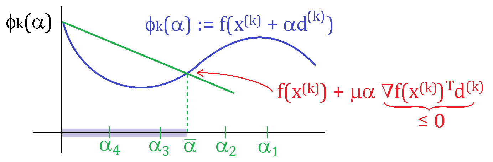

Gradient Descent¶
Descent Directions¶
In this lecture we will consider unconstrained nonlinear optimization of the form
where f:\R^n \rightarrow \R is continously differentiable and study an iterative algorithm that solves it. We will consider an iterative algorithm of the form
where \vd^k and \alpha^k are search direction and step length, respectively, at the kth iteration of the algorithm. A seach direction \vd \neq 0 is a descent direction for f at \vx if the directional deravtive is negative, i.e.,
\lemma{1} If f is continously differentiable and \vd is a decent direction at \vx, then for some \epsilon >0, we have
\proof (Idea) Because f'(\vx;\vd)<0, we get
So, there exists \epsilon >0 such that \frac{f(\vx+\alpha\vd-f(\vx)}{\alpha}<0 for all \alpha \in (0,\epsilon].
The general outline of decent scheme is:
Descent scheme outline
Initialization: choose \vx^0 \in \R^n
For $ k = 0,1,2,\dots
-
compute descent direction \vd^k
-
compute step size \alpha^k such that f(\vx^k +\alpha^k\vd^k)< f(x^k)
-
update \vx^{k+1} = \vx^k +\alpha^k \vd^k
-
check stopping criteria
Each step in the above gradient descent scheme raises a few important question:
-
How to determine a starting point?
-
What are advantages/disadvantages of different directions \vd^k?
-
How to compute a step length \alpha^k?
-
when to stop?
Stepsize selection¶
These are the selection rules most used in practice:
-
Constant stepsize: Here, we fix an \bar{\alpha} and choose $\alpha^k = \bar{\alpha} for all k.
-
Exact linesearch: In exact linesearch, we choose \alpha^k to minimize f along a ray \vd^k starting at \vx^k, i.e.
\alpha^k = \argmin_{\alpha\geq 0} f(\vx^k+\alpha \vd^k) -
Backtracking "Armijo" linesearch: For some parameter \mu \in (0,1), reduce \alpha (eg, \alpha \leftarrow \alpha/2 begining with \alpha = 1) until the following sufficient decrease property is satisfied
f(\vx^k) - f(\vx^k + \alpha d^k) \geq -\mu \alpha \nabla f(\vx^k)\trans\vd^k In the above figure, \alpha_3 and \alpha_4 satisfy the sufficient decrease property.
\exa{(Exact linesearch for quadratic functions)} An exact linesearch is typically only posible for quadratic functions:
with \mA \succ 0. Exact line search solves the 1-dimensional optimization problem
where \vd is a descent direction, and both \vx and \vd are fixed. In the quadractic case, we have
Since the gradient of f(\vx+\alpha\vd) w.r.t. \alpha is
the optimal \alpha = -\frac{\nabla f(\vx)\trans\vd}{\vd\trans\mA\vd}, which is always positive under the assumption that \mA \succ 0.
Search Directions¶
The simplest seach direction provies the gradient descent algorithm. In gradient descent, the seach directon \vd^k : = -\vg_k, where \vg_k = \nabla f(\vx^k). It is easy to see that the negative gradient descent direction -\vg_k provides a descent direction. To show that -\vg_k is a descent direction, consider
If \vg_k \neq 0, i.e. \vx^k is not a stationary point, then -\|\vg\|_2^2 <0. The negative gradient is also called the steepest descent direction of f at \vx. We say \vd is the steepest descent direction if it solves
The gradent descent algorithm is:
Gradient descent
Input: \epsilon >0 (tolerance), \vx_0 (starting point)
For k = 0,1,2,\dots
-
evaluate gradient \vg^k = \nabla f(\vx^k)
-
choose step length \alpha^k based on reducing the function \phi(\alpha) = f(\vx^k-\alpha\vg^k)
-
set \vx^{k+1} = \vx^k -\alpha^k \vg^k
-
stop if \|\nabla f(\vx^{k+1})\|<\epsilon.